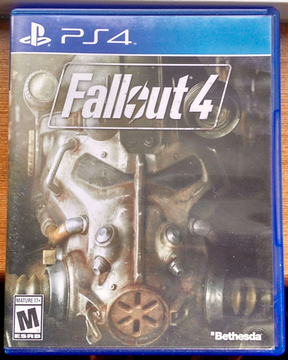

| 
Fallout 4 |
I really like the Fallout 4 game. I've played the other Fallout games and i've always like them alot just cause there maps are very big and there is never a shortage of things to do in the game. It seems like almost anywhere you go there is someone asking for help with something. It gets you to explore the map more and find secret hidden stuff throught the map. All of the fallout games have multiple add-ons. At this moment in time Fallout 4 has Far Harbor DLC which is a map that is actually bigger then any other DLC map they have released. I love this game. It's fun and has never ending things to do.